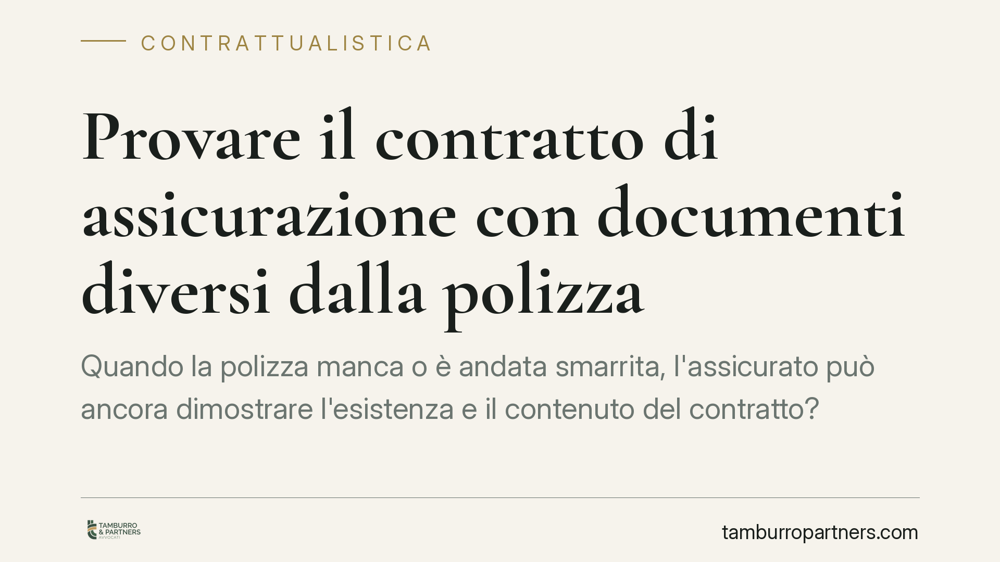

Provare il contratto di assicurazione con documenti diversi dalla polizza
Quando la polizza manca o è andata smarrita, l'assicurato può ancora dimostrare l'esistenza e il contenuto del contratto? La Cassazione torna sul tema della prova documentale del contratto assicurativo, chiarendo quali documenti alternativi possano valere e a quali condizioni. Una questione che decide l'esito di molte controversie con le compagnie.

Il contesto
Il contratto di assicurazione richiede la forma scritta, ma non a pena di nullità. L'assicurato che voglia far valere le proprie ragioni deve però essere in grado di provarne esistenza e contenuto. Il problema si pone quando la polizza non è disponibile: smarrita, mai consegnata, distrutta.
La giurisprudenza di legittimità è tornata sul punto chiarendo entro quali limiti sia possibile ricorrere a documenti diversi dalla polizza e alla prova testimoniale.
> Nota redazionale: gli estremi esatti della pronuncia (numero, sezione, data di deposito) vanno verificati alla fonte prima della pubblicazione, non risultando allo stato confermati in modo affidabile.
Inquadramento normativo
L'art. 1888 c.c. stabilisce che il contratto di assicurazione deve essere provato per iscritto. Si tratta di forma ad probationem e non ad substantiam: la distinzione è decisiva.
Nella forma ad substantiam la mancanza dello scritto rende il contratto nullo. Nella forma ad probationem, invece, il contratto è valido anche se concluso oralmente; ciò che manca è soltanto la possibilità di provarlo liberamente. Lo scritto serve a dimostrarne l'esistenza, non a farlo esistere.
Il secondo comma dell'art. 1888 c.c. pone inoltre a carico dell'assicuratore l'obbligo di rilasciare al contraente la polizza o altro documento sottoscritto. È un elemento che rileva quando l'assicurato lamenti la mancata consegna del documento: l'inadempimento della compagnia non può ritorcersi contro chi aveva diritto a riceverlo.
Sul piano probatorio operano l'art. 2725 c.c., che per i contratti da provare per iscritto ammette la prova testimoniale solo nel caso previsto dall'art. 2724 n. 3 c.c., e cioè quando il contraente ha perduto senza sua colpa il documento che gli forniva la prova. Fuori da questa ipotesi, la testimonianza è preclusa.
Cosa cambia in concreto
Per l'assicurato che agisce contro la compagnia, il punto è chiaro: l'onere della prova dell'esistenza e del contenuto del contratto grava su di lui. Non basta affermare di essere assicurato; occorre dimostrarlo.
In assenza della polizza, questa dimostrazione può essere costruita con documenti diversi: la quietanza di pagamento del premio, la documentazione bancaria che attesta il versamento, la corrispondenza con la compagnia o con l'intermediario, le condizioni generali, eventuali appendici o attestati di rischio. Sono elementi che, valutati insieme, possono ricostruire il rapporto.
La prova testimoniale resta uno strumento residuale. È ammessa quando l'assicurato dimostri di aver perso il documento senza propria colpa: e anche l'incolpevolezza dello smarrimento va provata, non presunta.
Ne deriva un profilo pratico rilevante. Chi conserva con ordine la documentazione contrattuale e tiene traccia dei pagamenti si trova in posizione probatoria solida. Chi si affida alla memoria o a documenti frammentari rischia di non riuscire a sostenere la propria domanda, pur avendo materialmente stipulato il contratto.
Cosa fare in concreto
- Conserva la polizza e ogni documento collegato — condizioni generali, appendici, attestati di rischio, comunicazioni della compagnia — in formato cartaceo e digitale.
- Mantieni traccia del pagamento del premio: quietanze, ricevute, estratti conto o disposizioni bancarie. Il versamento del premio è indizio forte dell'esistenza del rapporto.
- Richiedi copia integrale del contratto all'assicuratore o all'intermediario in caso di smarrimento, ricordando che l'art. 1888, comma 2, c.c. impone il rilascio del documento.
- Documenta le circostanze dell'eventuale smarrimento, così da poter dimostrare l'assenza di colpa richiesta per l'accesso alla prova testimoniale.
- È opportuno valutare preventivamente la completezza del materiale probatorio prima di avviare l'azione.
Conclusione
L'esistenza del contratto di assicurazione non dipende dal possesso della polizza, ma provarlo senza di essa richiede una ricostruzione documentale attenta. La distinzione tra forma richiesta per la validità e forma richiesta per la prova segna il confine tra un contratto valido e uno realmente azionabile in giudizio.
---
Contributo informativo a cura di Tamburro & Partners Avvocati - Avv. Giuseppe Tamburro. Non costituisce parere legale.
Ogni contratto ha il suo equilibrio.
Se vuoi una revisione delle clausole o una redazione su misura, scrivi allo studio. Ti rispondiamo entro un giorno lavorativo.